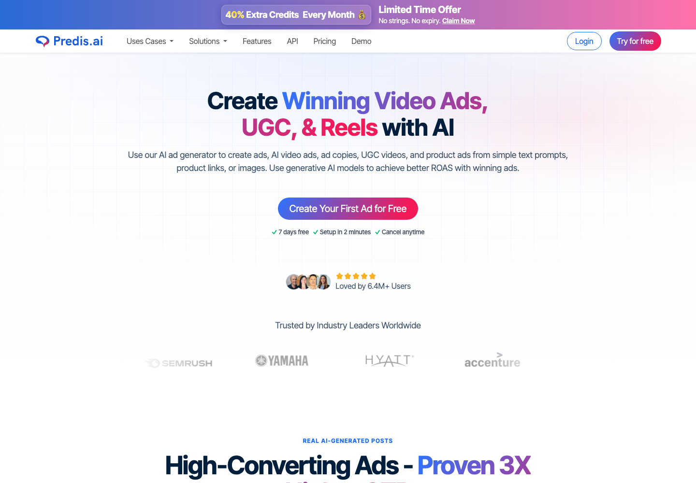
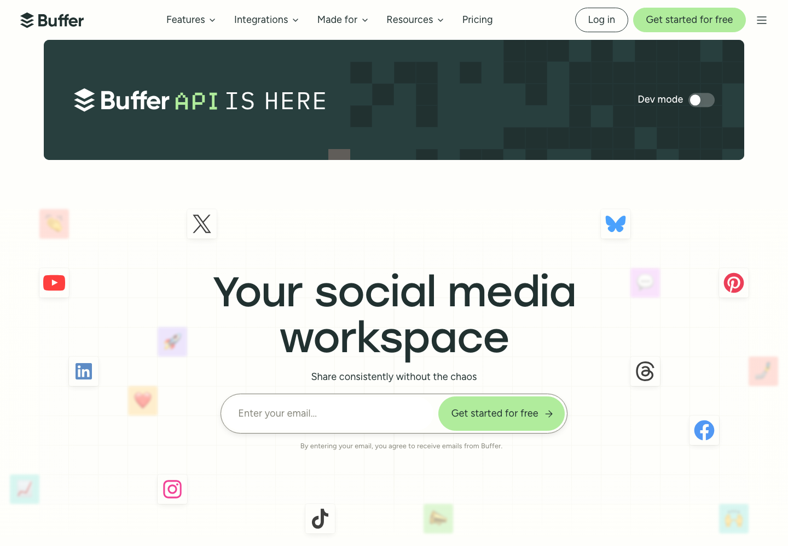
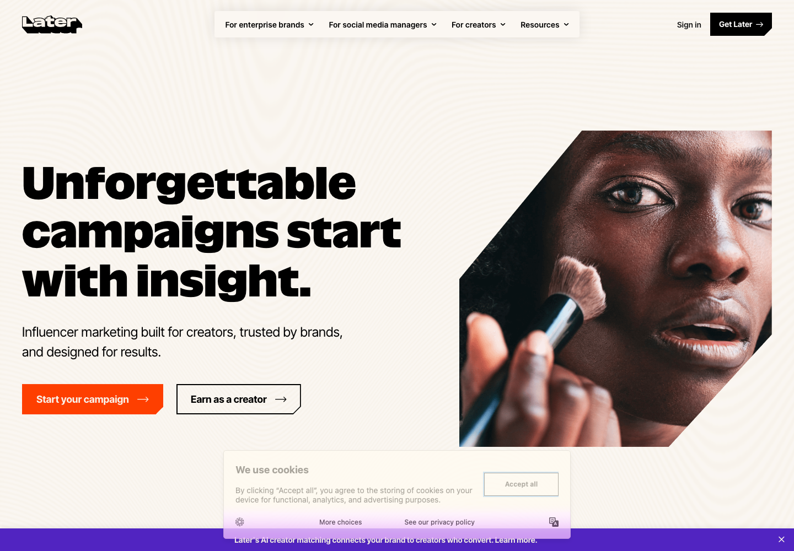
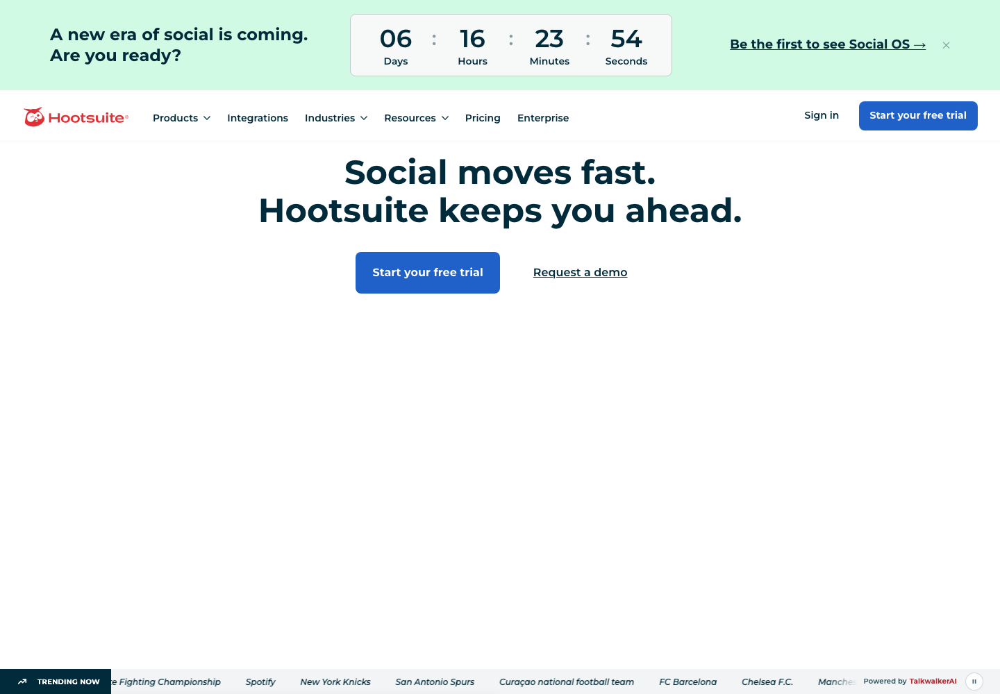
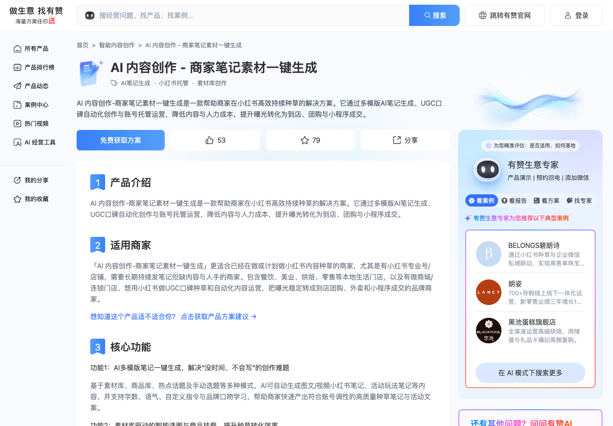
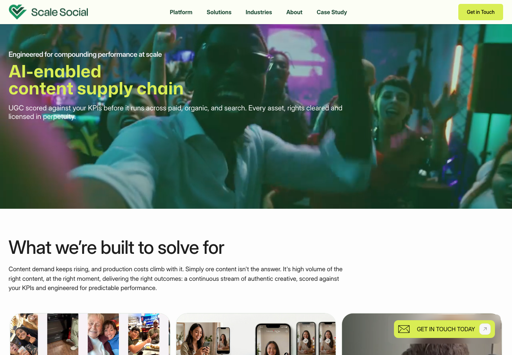
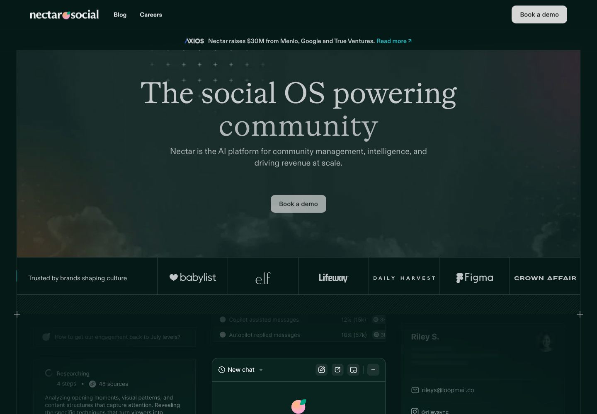

LocalPilot AI · Co-founder Research
给 co-founder 的高密度中文 deck：市场、用户痛点、平台策略、竞品、MVP 与拍板问题。
不要做 AI 发帖工具。做本地商家的 AI Marketing Operator。
一个促销/服务/产品想法，转成平台原生内容，经老板审核后发布，并追踪电话、预约、私信、优惠券、到店。
先验证最短闭环：官方账号连接、老板批准、正式发布、轻量 attribution。
Buffer/Hootsuite 已经很多；LocalPilot 要解决“不知道发什么 + 发了有没有客户”。
LocalPilot AI · Co-founder Research
LocalPilot AI · Co-founder Research
LocalPilot AI · Co-founder Research
| 平台 | 用户意图 | 适合内容 | 成功指标 | API / MVP 策略 |
|---|---|---|---|---|
| Facebook MVP first | 本地社区、活动、优惠、熟人信任 | 优惠、服务更新、节日活动、客户 testimonial、本地故事 | comments、shares、messages、event responses、calls、link clicks | Meta API 可行但要权限/app review/token；最适合先验证官方发布闭环。 |
| Instagram Phase 2 | 视觉发现、品牌印象、生活方式 proof | Reels、Stories、before/after、behind-the-scenes、carousel | saves、profile visits、DMs、Reels reach | Graph API 可部分 publishing；适合视觉 proof，不必第一天做深。 |
| TikTok Second | 娱乐发现、趋势、真实感、老板/员工人格化 | 短视频 hook、服务过程、老板出镜、trend adaptation、字幕脚本 | watch time、completion、shares、comments、profile visits | Content Posting API 支持 Direct Post/Upload-to-Draft；先做 script/shot list。 |
| 小红书 Deferred | 搜索、攻略、生活方式决策、华人消费信任 | 笔记、合集、对比、真实体验、关键词、收藏型 carousel | saves、search rank、comments、KOC credibility | 第三方自动发布有限；先 assisted publish + 中文内容模块。 |
LocalPilot AI · Co-founder Research
行业、位置、服务、价格、语言、品牌语气、营业时间、季节性。
老板输入一个促销、服务、产品、活动或照片/视频素材。
同一目标，按 Facebook/TikTok/IG/XHS 重写逻辑。
老板审核、改字、批准；这是信任机制，不是摩擦。
优先 Facebook 官方发布；其他平台按 API 难度推进。
unique URL/QR/coupon/call/message/booking/walk-in feedback。
“这个周末 HVAC tune-up 做 $89 优惠” → FB 社区帖 + TikTok 脚本 + IG caption + tracking CTA。
LocalPilot AI · Co-founder Research
替代“写文案/做素材”的预算；弱在本地经营闭环。
替代“排期/管理”的预算；弱在 strategy 和 real attribution。
替代“外包营销”的预算；强在人工信任，弱在价格和速度。
证明商家内容自动化成立；但 China/XHS/agency-heavy。
类别验证、未来威胁、命名风险；多数不是单店 SMB wedge。
完整可点击竞品库含 27 个产品、截图、官网链接、pricing 和我们赢/输在哪里：competitors.html
LocalPilot AI · Co-founder Research

Predis.ai最接近 AI 内容直接竞品
Buffer轻量 scheduler 标杆
Later视觉内容 planning
Hootsuite企业社媒管理 incumbent
有赞 AI 内容创作中国商家内容自动化对标
Scale SocialAI UGC supply chain
Nectar SocialEnterprise engagement validatorLocalPilot AI · Co-founder Research
| 竞品 | 它强在哪里 | 它弱在哪里 | 对 LocalPilot 的判断 |
|---|---|---|---|
| Predis.ai 最接近 US 直接竞品 | AI post/video/carousel、multi-platform scheduling、自助低价、SEO 强。 | 偏内容工具；本地 strategy、owner approval、真实 calls/bookings attribution 弱。 | 如果我们只做 AI 发帖，会被它商品化；必须做完整闭环。 |
| Youzan AI 内容创作 中国商家对标 | 商家内容自动化、商品/店铺/团购结合、小红书场景明确。 | China/XHS/有赞生态绑定；不是美国本地商家 Facebook/TikTok。 | 证明商家内容自动化成立；美国市场仍有空位。 |
| Scale Social 类别验证 | 真实顾客 UGC + AI ad + 销售增长叙事，绕开 AI spam 质疑。 | 需要 UGC 规模，更适合 multi-location/enterprise。 | 未来可做 testimonial/review-to-post；MVP 不做 UGC supply chain。 |
| Nectar Social 资本验证 | $30M Series A；企业 social engagement、brand voice、interaction intelligence。 | enterprise，不解决 SMB 今天发什么/怎么发/有没有客户。 | 长期 DM/comment assistant 可参考；短期不是直接竞品。 |
LocalPilot AI · Co-founder Research
| 能力 | Predis | Buffer/Hootsuite | Youzan | Scale/Nectar | LocalPilot |
|---|---|---|---|---|---|
| One prompt → ready-to-post | 有 | 部分 AI caption | 有 | 不是核心 | 有 |
| 平台原生策略，不是 1×4 改写 | 弱 | 无 | XHS 强，跨平台弱 | 不完整 | 核心 |
| Owner approval 是核心体验 | 需要人工但不是核心 | 团队审批偏重 | 有商家审核 | 多为自动/企业流程 | 核心 |
| 官方账号发布 | 有 | 强 | 生态内 | 场景不同 | FB first |
| Calls/bookings/DMs/coupons attribution | 弱/无 | 弱/无 | 团购/核销局部 | enterprise/ads 局部 | 核心 wedge |
| 适合单店美国本地 SMB | 泛 SMB/creator | 工具化 | 中国生态 | enterprise/multi-location | 目标客户 |
LocalPilot AI · Co-founder Research
LocalPilot AI · Co-founder Research
| 阶段 | 动作 | 验证指标 |
|---|---|---|
| 0–30 天 | 5–10 家本地商家，人工辅助 onboarding，每周 2–3 个 campaign。 | 是否愿意输入想法、审核内容、连接 Facebook、正式发布。 |
| 30–60 天 | Facebook official publish + attribution report。 | approve rate、publish completion、calls/DMs/coupon signals。 |
| 60–90 天 | 收费 pilot / renewal conversation。 | 是否愿意付 $99–299/mo 或 setup fee。 |
HVAC / home service、餐馆、salon/beauty、clinic/wellness、本地零售、华人商家。Aurora HVAC 可自用。
LocalPilot AI · Co-founder Research
| 风险 | 为什么危险 | 对策 |
|---|---|---|
| 商家不愿意连接官方账号 | 没有官方发布，闭环断掉。 | Facebook first + 明确权限说明 + owner approval + 可 revoke。 |
| 商家不持续审核 | workflow 留存失败。 | weekly autopilot、手机一键 approve、少而准的内容包。 |
| AI 内容 generic | 会被认为是 spam，和 Predis/Canva 无差别。 | 行业 playbook、买家语言 mining、商家历史内容/评论学习。 |
| 没有明显业务结果 | 客户试用但不付费。 | 轻量 attribution 先跑：URL/QR/coupon/call/message，不等完美集成。 |
| 平台 API 权限复杂 | 延迟真实发布。 | Facebook official path 先打通；TikTok draft/assisted；XHS deferred。 |
| 命名冲突 | Polsia LocalPilot 已出现，外部传播有风险。 | pilot 前评估改名或准备备选 brand。 |
LocalPilot AI · Co-founder Research
LocalPilot AI · Co-founder Research
Facebook first；HVAC + 餐馆 + salon 三类 pilot；先 service-assisted；attribution 从 unique URL/QR/coupon/call click 开始；外部 pilot 前准备新名字。
LocalPilot AI · Co-founder Research
| Week | Build | Customer discovery | Decision output |
|---|---|---|---|
| 1 | Facebook connection + approve/publish happy path | 访谈 10 个老板，验证账号连接顾虑 | 权限文案 + onboarding script |
| 2 | Campaign input → FB/TikTok/IG drafts + approval UI | 用真实商家 offer 生成内容，让老板打分 | 内容质量 bar + vertical templates |
| 3 | unique URL/QR/coupon/call click tracking | 让 3–5 家商家发布真实内容 | publish completion + attribution feasibility |
| 4 | weekly report + next-week recommendations | 问是否愿意付费继续 | pricing / package / next vertical |
LocalPilot AI · Co-founder Research
不要做 AI 发帖工具。
用 Facebook 官方发布 + 老板审核 + 轻量 attribution，先验证商家是否愿意持续发布并付费。
competitors.html：27 个竞品截图、官网链接和判断。
platform-signals.html：用户抱怨、平台策略和 research source。
Facebook first、vertical、命名、pilot 是否 service-assisted。